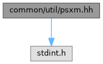

|
Nugget
Bare-metal libraries and examples for the original PlayStation
|
The PXM2 mesh format, and a reader for it. More...
#include <stdint.h>
Go to the source code of this file.
Classes | |
| struct | psxm::Header |
| struct | psxm::Vec3 |
| struct | psxm::UV |
| struct | psxm::Triangle |
| class | psxm::Model |
| Points into a PXM2 blob without copying it, so the blob has to outlive it. For an asset linked in by the build rule that costs nothing. More... | |
Namespaces | |
| namespace | psxm |
The PXM2 mesh format, and a reader for it.
PXM2 is what the nugget.psxm xmake rule (tools/xmake/assets.lua) produces from a Wavefront OBJ: a triangle mesh in the units the GTE and the GPU take directly, so the runtime only points into it. Textures are not part of it; they travel separately, typically as TIMs.
All fields are little endian. The layout is:
| Offset | Size | Contents |
|---|---|---|
| 0 | 24 | Header |
vertexOffset | 6 * count | vertices, three int16 x, y, z each |
normalOffset | 6 * count | normals, three int16 x, y, z each, 4.12 |
triangleOffset | 20 * count | Triangle records |
The offsets are relative to the start of the blob and each section starts on a four byte boundary; the bytes between sections are zero. Readers find the sections through the offsets, never by assuming they follow each other, so a section added later does not move the existing ones.
Coordinates are in the converter's fixed-point scale (OBJ units times the rule's nugget.psxm.scale, 256 by default), with Y negated from the OBJ so that it grows downwards like the screen. Normals take the same Y flip and are scaled by 4096; identical normals are stored once. Corner order is kept as authored, except that a face whose winding disagrees with its own authored normal is reordered to match it. Front faces then wind positively once projected.
Each triangle holds three vertex indices, three normal indices (one per corner, so smooth and hard edges both work), and three texture coordinates in texels, with V flipped from the OBJ because VRAM grows downwards. Indices are zero based and always below the matching count.